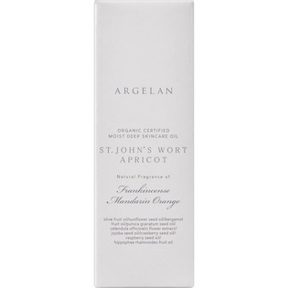

返回列表
产品名称：アルジェラン モイストディープスキンケアオイル

カラーズ アルジェラン モイストディープスキンケアオイル ３０ｍｌ
メーカー カラーズ
JANコード 4571242812493
商品の特徴
100％植物由来＆植物性セラミドの濃密美容オイル
- 成分・分量
- トリ（カプリル酸／カプリン酸）グリセリル・オリーブ果実油＊・ヒマワリ種子油・ニュウコウジュ油・マンダリンオレンジ果皮油＊・ベルガモット果実油＊・セイヨウオトギリソウエキス＊・フィトスフィンゴシン・アンズ核油＊・ザクロ種子油＊・トウキンセンカ花エキス＊・ホホバ種子油＊・トコフェロール・クランベリー種子油＊・ヨーロッパキイチゴ種子油＊・ヒポファエラムノイデス果実油＊ ＊オーガニック原料
- 用法及び用量
- ＜使用方法＞
適量（2～3滴を手にとり、頬や口もとなどの乾きやすい部分から顔全体になじませます。化粧水を肌の奥へ押し込むようにハンドプレスでなじませます。